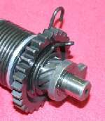

The kick pedal will not go down at all, goes down only a little, or stays down and does not return. A pedal that will not move may be blocked outside the engine, or the bike may be in gear, or the engine itself may be locked. A pedal that stays down usually means the return spring inside the right engine cover has broken or come off its hook.
Is it safe to ride?
If the engine runs normally on the electric starter, ride with care and tie the pedal up so it cannot drop. If the engine will not turn at all, do not try to force it: see Engine has seized or locked up.
Quick checks first
- Is the bike in neutral? Many kickstarters do not work in gear.
- Is the pedal bent, or hitting the footpeg, exhaust or frame?
- Is the folding pedal arm fully unfolded?
- Check the engine oil level.
- Does the electric starter turn the engine?
Diagnose it step by step
1Is the bike in neutral, with the neutral light on?
- No: select neutral and try again. If you cannot find neutral, see Hard to find neutral.
- Yes: go to step 2.
2Is the pedal hitting something, or bent?
- Yes: straighten or replace it. Check the footpeg and exhaust mounts are not bent inward.
- No: go to step 3.
3Does the engine turn with the electric starter, or by rocking the bike in top gear?
- No: the engine may be locked. Stop and check the oil level (Check the engine oil level), then Engine has seized or locked up.
- Yes: go to step 4.
4Does the pedal move down but stay down?
- Yes: the return spring is broken or unhooked. Check the kickstart mechanism.
- No, it will not move at all: go to step 5.
5Remove the pedal. Does the shaft turn by hand with a spanner on the splines (gently)?
- No: the kick gear or ratchet is jammed inside, or a gearbox part is damaged. Hand to a workshop: Check the kickstart mechanism and, if gear selection is also odd, Check the gear lever and shift linkage.
- Yes: the pedal or its folding joint was jammed. Clean, grease and refit.
What happens if you force it: you can break the kick shaft, the ratchet or gearbox teeth, and turn a cheap repair into an engine rebuild.
Causes, most likely first
| Cause | How to confirm | Fix |
|---|---|---|
| Bike in gear | Neutral light off | Select neutral |
| Pedal bent or blocked | Pedal touches peg or exhaust | Straighten or replace pedal |
| Broken or unhooked return spring | Pedal stays down | Check the kickstart mechanism |
| Jammed ratchet or kick gear | Shaft will not turn; engine turns on starter | Check the kickstart mechanism |
| Seized engine | Engine does not turn by any method | Assess bottom end and internal engine damage |